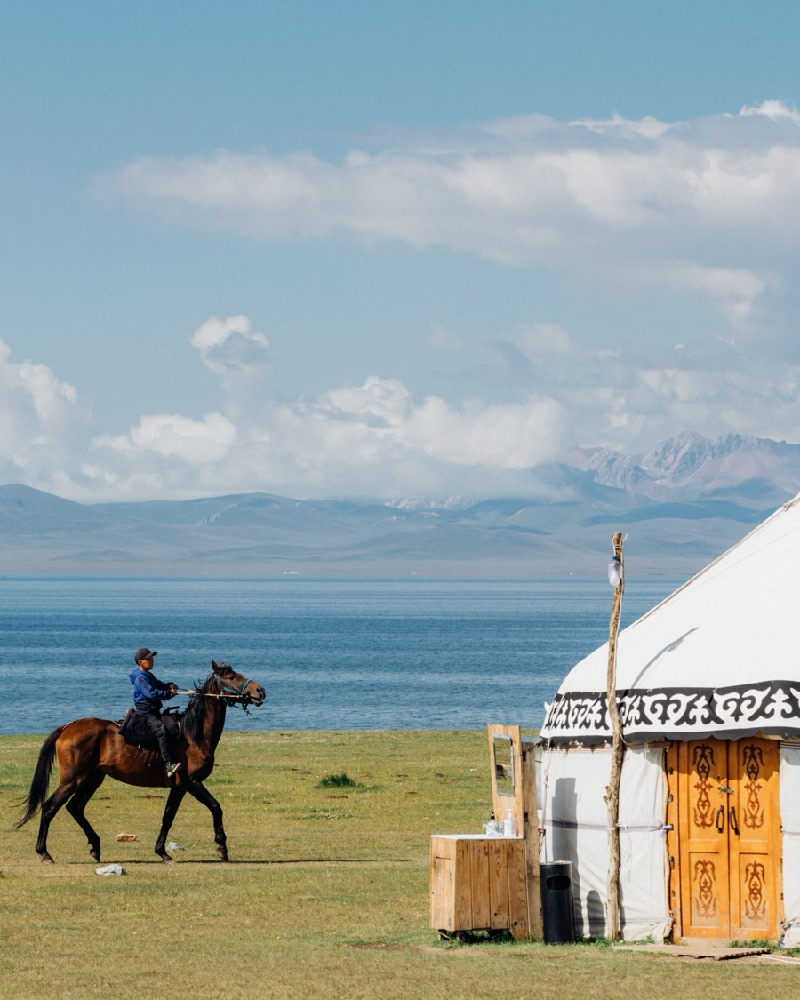
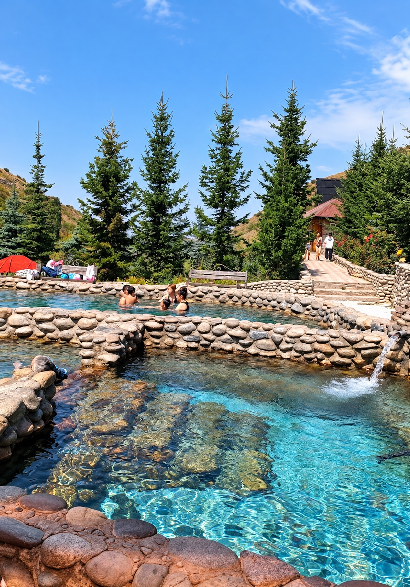
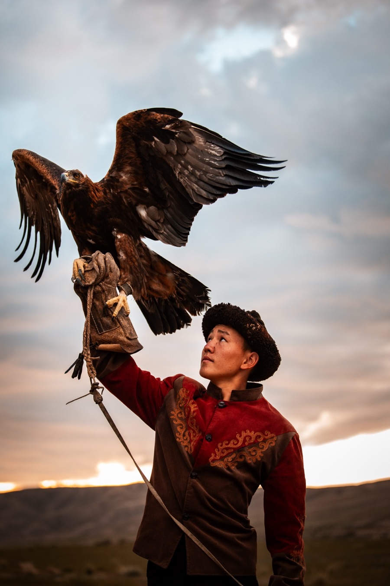
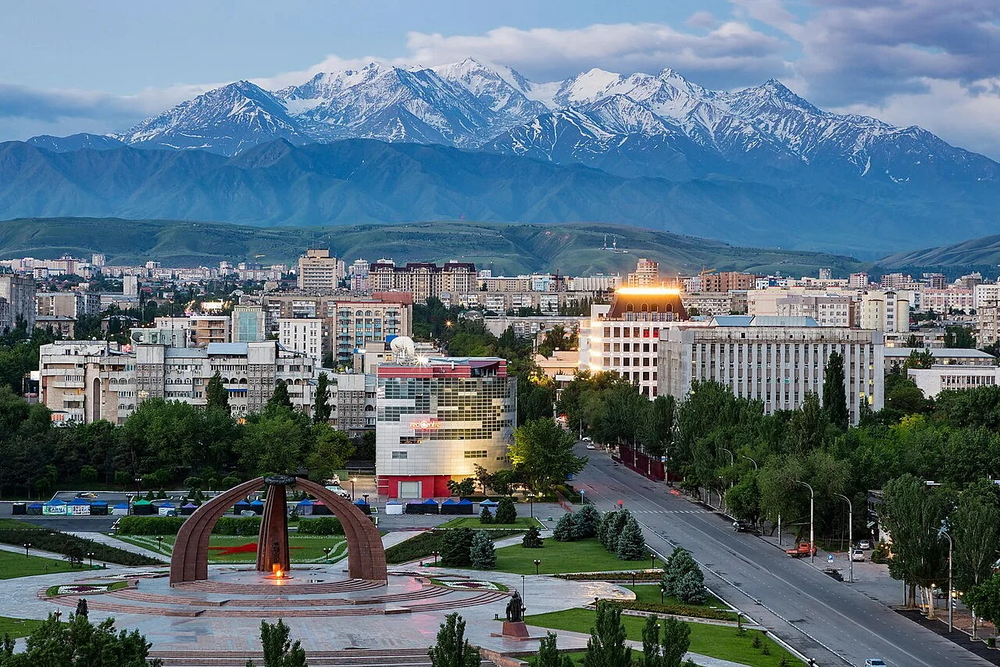
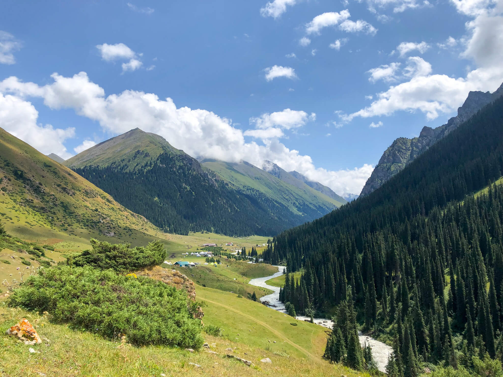
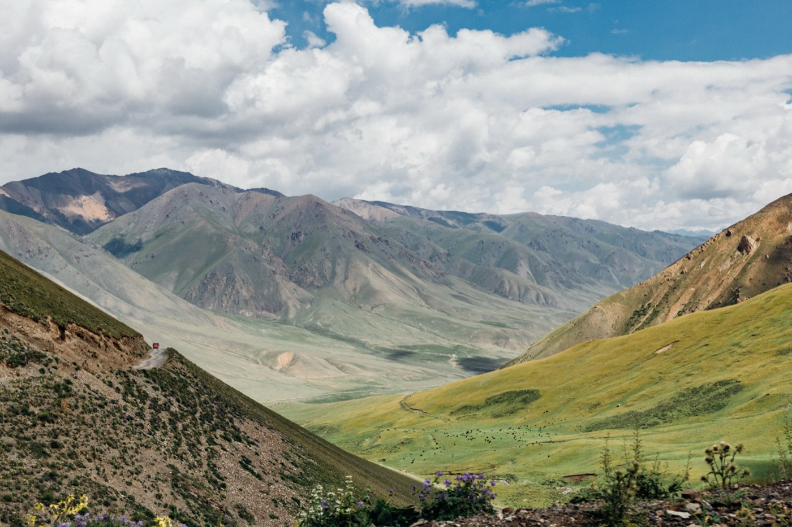
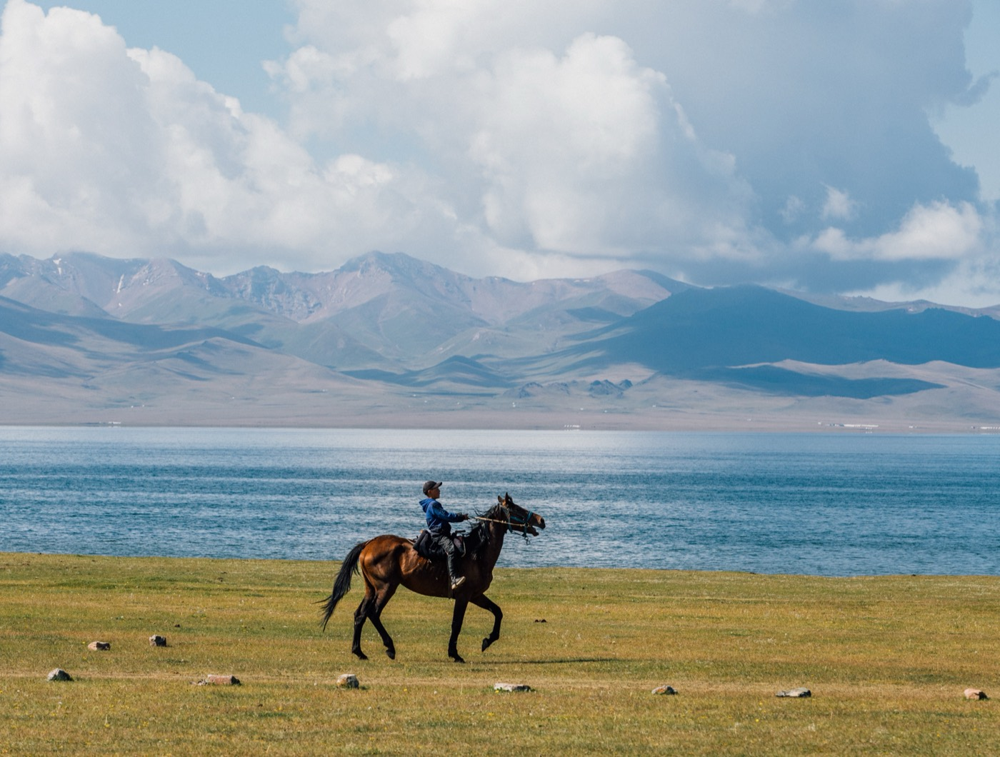
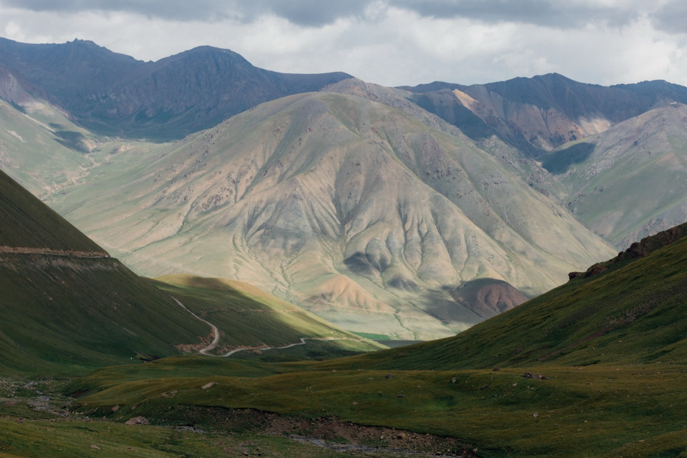

Two nights at Song-Kul
A yurt camp by a lake at 3,000 m, a horse ride and a day with a nomad family.
Hike mountain gorges, soak in hot springs, ride by a high alpine lake, and share meals with nomad families on a classic 8-day loop through Kyrgyzstan.
This journey takes you around the best of Kyrgyzstan in eight days: the Silk Road tower of Burana, the shores of Issyk-Kul, the forests of Karakol Gorge, the alpine valley of Altyn-Arashan, the red canyons of the south shore, and two nights at Song-Kul, a lake at 3,000 m surrounded by summer pastures. Along the way, you'll meet a golden eagle hunter, learn how yurts and felt carpets are made, and spend time cooking and sharing meals with nomad families.
It's a road-trip loop with real mountain moments: some long driving days, a bumpy truck ride, hikes at a comfortable pace, and two nights in a yurt camp. In return, you'll see the landscapes and traditions that make Kyrgyzstan unforgettable.

A yurt camp by a lake at 3,000 m, a horse ride and a day with a nomad family.

A morning soak at Aksu, then a truck ride up to an alpine valley under snowy peaks.

An eagle hunter, yurt making, a felt workshop and cooking beshbarmak with nomads.
This tour is designed for travelers who enjoy nature and are happy with simple comforts in the mountains. Please read this section and the full day-by-day itinerary carefully before booking.
Every traveler should read this personally, not just the person who organizes the trip for friends or family.
4 nights in guesthouses (Karakol, Bokonbaevo, Kochkor). 1 night in a mountain guesthouse at Altyn-Arashan, in cabin rooms. 2 nights in a yurt camp at Song-Kul, usually shared with your travel companions. 1 night in a hotel in Bishkek.
There's no shower for 2 nights at the Song-Kul yurt camp (Days 6–7). Mountain guesthouses may have only basic showers. You'll have a hot shower at the hotel in Bishkek before the farewell dinner.
At Song-Kul and in the mountains, toilets are simple and shared, often outdoors. Some guesthouses also have shared bathrooms.
There's no phone signal at Altyn-Arashan (Day 3) or Song-Kul (Days 6–7), and Wi-Fi is weak or unavailable there. Charging is limited in the mountains, so please bring power banks.
In the mountains, we eat what the camps and families prepare: simple, home-style Kyrgyz food. Please tell us about any dietary needs (lamb or not, vegetarian, allergies) when you book, so we can arrange your meals from the first day.
Sunshine, rain, wind, or even snow in high areas, also in summer. Nights at Song-Kul are cold. Your guide may change the order of activities, or replace some, for your safety.
Three days include 6.5–7.5 hours of travel, with regular stops. The road to Altyn-Arashan is a rough mountain track, climbed in an old Soviet-style truck: bumpy, but part of the adventure.
Hikes are at a comfortable pace, about 3–3.5 hours, and you need average fitness. On Day 7, you ride a horse for about 1.5 hours each way. No riding experience is needed, and a car option is available.
The highest point is Song-Kul at about 3,000 m. Most people adapt well, but some feel headaches or tiredness. Please tell us about any health conditions before booking.
Travel insurance that covers hiking, horse riding, and high altitude is required.
Shoes with good grip, warm layers, a rain jacket, a swimsuit for the hot spring and the lake, a sleeping liner, and power banks.
| Day | Overnight | Shower | Toilet | Wi-Fi / signal |
|---|---|---|---|---|
| Day 0 | Hotel in Bishkek (included) | Hot shower in your room | Private | Wi-Fi |
| Day 1 | 78 Hotel or Matsunoki, Karakol | Yes; hot water is limited, so please keep showers short | Yes, in your room | Yes |
| Day 2 | 78 Hotel or Matsunoki, Karakol | Yes; hot water is limited, so please keep showers short | Yes, in your room | Yes |
| Day 3 | Mountain guesthouse, Altyn-Arashan, cabin rooms | Shared; hot water is limited, so please keep showers short | Shared | No phone signal |
| Day 4 | Altyn Oimok or Elestet, Bokonbaevo | Shared; hot water is limited, so please keep showers short | Shared | Yes |
| Day 5 | Guesthouse, Kochkor | Yes; hot water is limited, so please keep showers short | Yes, in your room | Yes |
| Day 6 | Yurt camp, Song-Kul | No | Simple outdoor toilet, shared | No Wi-Fi or phone signal |
| Day 7 | Yurt camp, Song-Kul | No | Simple outdoor toilet, shared | No Wi-Fi or phone signal |
| Day 8 | Duo Hotel, Bishkek | Yes, in your room | Yes, in your room | Yes |

One day you're walking through quiet forests along a mountain river; the next, you're soaking in a hot spring before driving up into an alpine valley under snowy peaks. You'll watch the sun set over the red rocks of Skazka Canyon, feel the stillness of Issyk-Kul in the morning, and spend two calm days at Song-Kul, where the only sounds are the wind and the horses grazing outside your yurt.
And you'll share real moments with the people who live here: a riverside lunch with a local family, tea and fresh bread with nomads, and a meal you cook together in their yurt.
If you're looking for a break from noise, screens, and busy schedules, this is the classic way to discover Kyrgyzstan.

Arrival in Bishkek
All our tours start on Day 0, and this night is included in the trip. Arrive in Bishkek, check in to your hotel in the capital, enjoy a comfortable hot shower and rest well before your journey through Kyrgyzstan begins.

Bishkek → Burana → Tokmok → Karakol
Your journey begins with a drive to Burana Tower, an 11th-century minaret standing alone in the Chuy Valley, surrounded by ancient stone figures called balbals. Your guide shares the story of the Silk Road city that once stood here, before lunch with a local family in Tokmok. In the afternoon, the road follows the northern shore of Issyk-Kul, one of the largest mountain lakes in the world, with a stop to walk by the water and stretch your legs. You arrive in Karakol in the evening for dinner at a local restaurant serving Kyrgyz and Central Asian dishes.
Good to know
This is the longest drive of the trip, so stops are planned along the way.

Karakol Gorge and Karakol town
This morning you head into Karakol Gorge for a hike through spruce forests and alpine meadows along a mountain river. Afterward, you join a local family for a relaxed riverside barbecue lunch. In the afternoon, you return to town to visit the wooden Holy Trinity Church and the Dungan Mosque, built without a single nail in the style of a Chinese temple, with time for souvenir shopping. The rest of the afternoon is free, and dinner is at a Dungan family restaurant, where you try ashlyanfu, a refreshing cold noodle dish from Karakol.
Good to know
Wear shoes with good grip for the hike. For the mosque, please cover your shoulders and knees; women may need a scarf.

Karakol → Aksu → Altyn-Arashan
The day begins with a relaxing soak at the Aksu hot spring, quiet in the morning, so the whole group can enjoy it together. Then you climb into the mountains in a Soviet-style truck on a rough track, about 2.5 hours, to Altyn-Arashan, an alpine valley surrounded by snowy peaks. After lunch at the guesthouse, you set off on a guided hike up the valley. In the evening, the sky is dark and clear; in July and August, it's a great place to watch shooting stars.
Good to know
Bring a swimsuit and towel for the hot spring, and a warm layer for the evening. The truck ride is very bumpy; if you're nervous, let your guide know.

Altyn-Arashan → Barskoon → Skazka → Bokonbaevo
After breakfast, the truck takes you back down the valley. Lunch is a fish barbecue, before you drive along the south shore of Issyk-Kul. Late in the afternoon, you're welcomed for dinner by a family in Barskoon, then drive to Skazka Canyon, the “Fairy Tale Canyon,” just as the evening light turns its colorful rocks red and gold. You arrive at your guesthouse on the south shore of Issyk-Kul later in the evening.
Good to know
This is a long day with a late arrival (around 21:00), but seeing Skazka at sunset is worth it. Wear comfortable shoes for the canyon paths.

Bokonbaevo → Kyzyl-Tuu → Kochkor
The morning starts slowly by the lake, with time to swim or relax on the shore. Then you meet a berkutchi, a golden eagle hunter, and watch his eagle fly in a hunting demonstration, followed by a traditional folk music performance and lunch at his home. In the afternoon, you visit Kyzyl-Tuu, a village famous for its yurt makers, where you help put up a yurt with a local family. You reach Kochkor in the late afternoon, with time to rest before dinner.
Good to know
This is your last shower before 2 nights at Song-Kul. Please follow the hunter's instructions around the eagle.

Kochkor → Song-Kul
After breakfast, you join local craftswomen for a felt workshop, making a small piece of felt to take home. Then the road climbs over a mountain pass to Song-Kul, a vast lake at 3,000 m surrounded by summer pastures. On the way, you stop to spend time with a nomad family: help prepare lunch, make boorsok (fried bread), and taste fresh dairy and kymyz (fermented mare's milk). In the afternoon, you check in to your yurt camp by the lake, with time for a walk along the shore, sunset, and a sky full of stars.
Good to know
Nights at Song-Kul are cold, even in summer. Bring warm layers, a hat, and a sleeping liner.

Song-Kul
A full day at the lake. After a safety briefing, you ride a horse for about 1.5 hours across the pastures to a nomad family. Together you cook beshbarmak, Kyrgyzstan's national dish of hand-cut noodles and meat, and share lunch in their yurt. Afterward, you can help with daily life, from churning kymyz to playing games with the children, before riding back to camp via a viewpoint. The late afternoon is free by the lake, with optional archery, followed by dinner and another night under the stars.
Good to know
Helmets and gloves are provided, and no riding experience is needed. Beshbarmak is traditionally made with lamb; a non-lamb version can be prepared. If it rains, you drive to the family instead and cook inside their yurt.

Song-Kul → Kochkor → Bishkek
If you're an early riser, watch the sunrise over Song-Kul before breakfast. Then the road winds down from the mountains to Kochkor for lunch. On the drive back to Bishkek, you stop at a roadside family café for kattama, a flaky layered bread, and tea. You arrive in Bishkek in the afternoon, with time to shower and rest at your hotel before a farewell dinner at a restaurant in the city.
After the tour, we take you back to your hotel in the capital to rest (or, if you have an evening flight, we take you to the airport for free).
Good to know
If you have a flight on this evening, please tell us when you book, so we can arrange your transfer.
On the trip, you may taste these classic dishes:

Hand-cut noodles with boiled meat. The most iconic Kyrgyz dish, served for celebrations and to honor guests.

Fried lamb or beef with potatoes and onions: everyday nomad home cooking.

Rice slow-cooked with carrots and meat, rich and fragrant.

Hand-pulled noodles with vegetables and beef, a favorite across Central Asia.

Meat pastries baked in a traditional clay oven, crisp outside and juicy inside.

Skewers grilled over charcoal in the open air: the smell you'll meet most often on the road.
Can't find what you're looking for? Email us directly and we'll get back to you soon.